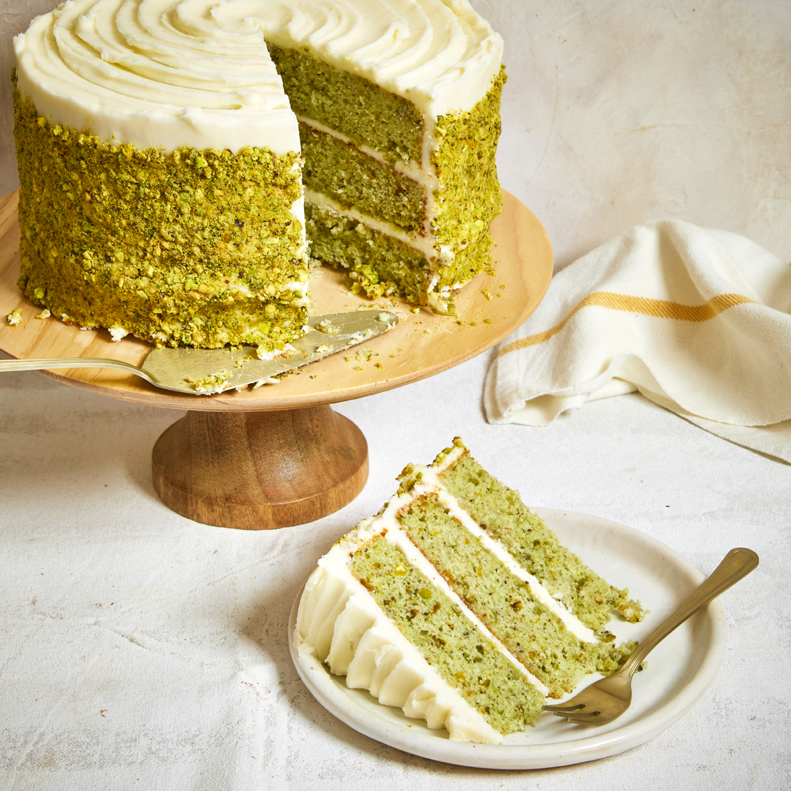

Pistachio Layer Cake

Description
This pistachio layer cake with cream cheese buttercream is really special. The layers are light, moist, and not too sweet, with plenty of
pistachio flavor. The presentation with the swirled top and pistachio-coated sides make it a real showpiece. Layers can be made, wrapped well,
and frozen up to a month in advance.
Ingredients
- 3 cups unsalted pistachios
- 2 cups all-purpose flour
- 2 teaspoons baking powder
- 5 large egg whites
- 1 cup whole milk
- 2 teaspoons vanilla extract
Steps
- Preheat the oven to 350 degrees F (175 degrees C). Spray three 8-inch round cake pans with cooking spray. Line each pan with a round piece of parchment paper, and spray with cooking spray.
- Prepare the cake: pulse pistachios in a food processor until finely ground, 10 to 15 pulses. Transfer 1 1/2 cups ground pistachios to a bowl with flour, baking powder, salt, and baking soda; whisk until well combined and set aside. Place remaining ground pistachios, about 1 1/3 cups, in a bowl and reserve for finishing the cake.
- Beat butter and white sugar for cake in a stand mixer fitted with a paddle attachment on medium-high speed, scraping down the sides as needed, until light and fluffy, about 3 minutes. Add egg whites and beat on high speed until combined, about 2
- Bake in the preheated oven until a toothpick inserted into the center of each pan removes cleanly, 22 to 24 minutes. Cool cakes in the pans for about 10 minutes. Run a table knife around the edges to loosen cakes, then invert carefully onto a serving plate or cooling rack. Let cool completely, about 30 minutes.
- Place one cake layer on a serving plate or cake stand. Top with 1 cup buttercream and 1 tablespoon ground pistachios, and spread evenly over the surface using a spatula. Place second cake layer on top; top with 1 cup buttercream and 1 tablespoon ground pistachios, and spread evenly over the surface. Place third cake layer on top, and spread 1 cup buttercream evenly over the surface. Spread 2 cups buttercream evenly around sides of assembled cake and smooth with a spatula. Transfer cake to the refrigerator and chill for 30 minutes.
Check out our other awesome recipes!